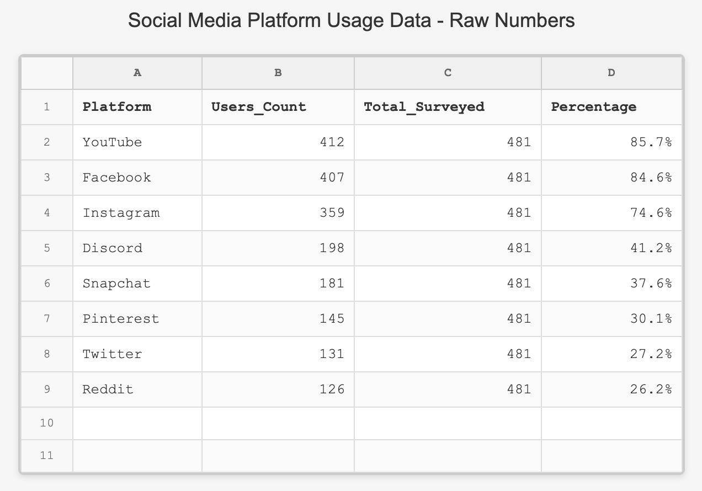
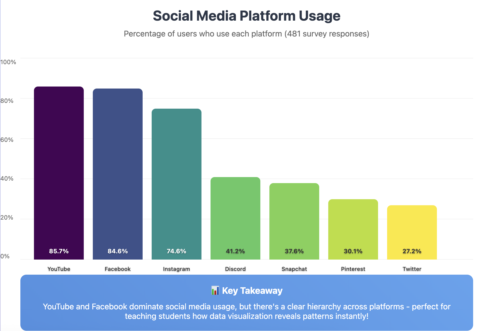

This workshop demonstrates how to teach data visualization using free, web-based platforms that eliminate installation barriers. Perfect for middle and high school educators looking to integrate data science into their curriculum.
Session Outline
Introduction - Data Visualization
Web Platforms - Google Colab, Posit Cloud
Python Demo - Create bar chart with social media data
R Demo - Same visualization in R
Syntax Comparison - Side-by-side comparison
Ethics - Deceptive visualization examples
From Data to Story
Start your workshop with this dramatic comparison to instantly engage your audience. Both show the exact same data about social media usage among teenagers:
📋 How Students Usually See Data
Social Media Usage Data: Raw numbers showing platform names, daily hours, and user demographics in rows and columns

Hard to see patterns in the numbers...
✨ The Same Data Visualized
Instant Insights: Youtube and Facebook dominate teen social media time

Now the story jumps out!
Quick Setup Instructions
Get your students started immediately with these web-based platforms - no installation required!
Python Setup (Google Colab)
Click "Open in Google Colab" button
Sign in with Google account
Click "Copy to Drive" to save
Run cells with Shift+Enter
R Setup (Posit Cloud)
Create free Posit Cloud account
Click "Open in Posit Cloud"
Project copies to workspace
Click "Knit" to run document
Python vs R: Side-by-Side Overview
Both languages are excellent for data visualization. Here's what your students need to know:
Python Basics
Libraries: pandas (data), matplotlib (plots)
Strength: General programming + data science
Example: df.plot(kind='bar')
R Basics
Libraries: ggplot2 (grammar of graphics)
Strength: Built specifically for statistics
Example: ggplot(data, aes(x, y)) + geom_bar()
Tips for Introducing to Students
✨ Start with the "Wow" Factor
Show impressive visualizations first
Use data they care about (social media, sports, gaming)
Create something beautiful in 5 minutes
Emphasize: "You can build this!"
🧱 Build Gradually
Start with simple bar charts
Add one element at a time (colors, labels)
Show before/after comparisons
Celebrate small wins
🧘 Avoid Coding Overwhelm
Provide pre-written code templates
Focus on changing values, not writing from scratch
Use copy-paste first, explain later
Emphasize: "It's okay not to understand everything"
🤝 Make it Collaborative
Pair programming/coding
Share screens and walk through together
Let students teach each other
Create class data visualization gallery
🔗 Connect to Real World
Use current events and trending topics
Show how journalists use these tools
Discuss career connections
Emphasize critical thinking skills
🎯 Keep it Simple
Start with 3-4 lines of code maximum
Hide complex setup in pre-written cells
Focus on the data story, not the code
Let curiosity drive deeper learning
Ready-to-Use Workshop Materials
🐍 Python Materials
Complete Python notebook with the social media dataset, ready to copy and use in Google Colab. Includes all code examples from the workshop.